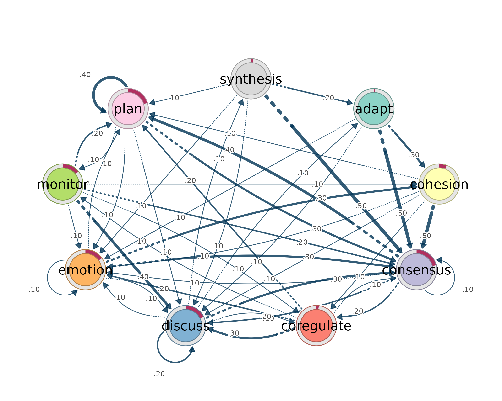

Interoperability: wide data, long logs, tna, and Nestimate
Mohammed Saqr
Sonsoles López-Pernas
Source:vignettes/interop.Rmd
interop.Rmdlagdynamics is designed to sit inside the same
event-sequence workflow as Transition Network Analysis (TNA),
Nestimate, cograph, and other sequence tools.
The important interoperability promise is simple:
- the same
lsa()front door accepts wide sequence data, raw long event logs,tnasequence objects, andNestimateprepared objects; - long logs use the same column grammar as TNA-style workflows:
actor,action,time,order, andsession; - fitted models expose transition probabilities, initial
probabilities, tidy transition tables, and a
cograph_networkobject for rendering.
Same grammar as TNA
In a TNA workflow, a raw event log is usually sequenced by naming the
actor, the event/action code, and either a time or order column.
lsa() uses the same grammar directly.
prepare_data(log, actor = "Actor", action = "Action", time = "Time")
lsa(log, actor = "Actor", action = "Action", time = "Time")The column names are passed as strings. action is the
only mandatory long-format column. If neither actor nor
session is supplied, the log is treated as one long
sequence. If session is supplied, each session is a
sequence. If both actor and session are
supplied, each actor-session pair is a sequence.
Wide sequence data
Wide data is the simplest input: rows are sequences and columns are
ordered time points. This is the form used by
engagement.
head(engagement)
#> 1 2 3 4 5 6 7
#> 1 Active Disengaged Disengaged Disengaged Active Active Active
#> 2 Average Average Average Average Average Average Average
#> 3 Average Active Active Active Active Active Active
#> 4 Active Active Active Active Active Average Average
#> 5 Active Active Active Average Active Average Active
#> 6 Average Average Disengaged Average Disengaged Disengaged Average
#> 8 9 10 11 12 13 14 15
#> 1 Active Average Active Average Active <NA> <NA> <NA>
#> 2 Average Average Active Average Average Average Average Average
#> 3 Active Active Average Active Active Active Active Active
#> 4 Active Active Active Average Active Average Active Average
#> 5 Active Active Disengaged Active Active Active Average Average
#> 6 Average Average Disengaged Average Disengaged Average Average Average
fit_wide <- lsa(engagement)
fit_wide
#> Lag Sequential Analysis - classical (lag 1, directed)
#> 3 states | 1734 transitions | 1870 events | 136 sequences
#> states: Active, Average, Disengaged
#> independence: G² = 618.3, df = 4, p <2e-16
#>
#> Significant transitions (p < 0.05): 7 of 9
#> strongest over-represented (of 3):
#> Active -> Active z = +21.7 ***
#> Disengaged -> Disengaged z = +15.4 ***
#> Average -> Average z = +12.5 ***
#>
#> Initial states:
#> Active 0.382 ████████████████████████
#> Average 0.368 ███████████████████████
#> Disengaged 0.250 ████████████████The result is read through the same verbs used everywhere else.
transitions(fit_wide, significant = TRUE)
#> from to lag count expected prob prob_col adj_res p
#> 1 Active Active 1 459 247 0.698 0.7051 21.7 4.60e-104
#> 2 Average Active 1 153 282 0.204 0.2350 -12.9 4.16e-38
#> 3 Disengaged Active 1 39 122 0.120 0.0599 -10.5 5.11e-26
#> 4 Active Average 1 176 290 0.267 0.2307 -11.3 1.06e-29
#> 5 Average Average 1 458 330 0.610 0.6003 12.5 1.35e-35
#> 6 Active Disengaged 1 23 121 0.035 0.0719 -12.6 3.64e-36
#> 7 Disengaged Disengaged 1 157 60 0.483 0.4906 15.4 1.90e-53
#> yules_q kappa kappa_z kappa_p lift sign significant
#> 1 0.828 0.444 19.19 4.68e-82 1.858 over TRUE
#> 2 -0.601 -0.499 -14.70 6.81e-49 0.543 under TRUE
#> 3 -0.698 -0.707 -11.46 2.03e-30 0.320 under TRUE
#> 4 -0.534 -0.424 -12.48 9.39e-36 0.608 under TRUE
#> 5 0.553 0.227 9.83 7.97e-23 1.386 over TRUE
#> 6 -0.826 -0.827 -13.41 5.14e-41 0.189 under TRUE
#> 7 0.754 0.314 13.56 7.34e-42 2.618 over TRUE
nodes(fit_wide)
#> state outgoing incoming
#> 1 Active 658 651
#> 2 Average 751 763
#> 3 Disengaged 325 320
initial(fit_wide)
#> state init_prob
#> 1 Active 0.382
#> 2 Average 0.368
#> 3 Disengaged 0.250Long event logs
Long logs have one row per event. The bundled
group_regulation_long data shows the TNA-style grammar
directly: actor, action, time, and a grouping column.
head(group_regulation_long)
#> Actor Achiever Group Course Time Action
#> 1 1 High 1 A 2025-01-01 08:27:07 cohesion
#> 2 1 High 1 A 2025-01-01 08:35:20 consensus
#> 3 1 High 1 A 2025-01-01 08:42:18 discuss
#> 4 1 High 1 A 2025-01-01 08:50:00 synthesis
#> 5 1 High 1 A 2025-01-01 08:52:25 adapt
#> 6 1 High 1 A 2025-01-01 08:57:31 consensusFit a single model from the raw log by naming the columns.
fit_long <- lsa(group_regulation_long, actor = "Actor",
action = "Action", time = "Time")
fit_long
#> Lag Sequential Analysis - classical (lag 1, directed)
#> 9 states | 25533 transitions | 27533 events | 2000 sequences
#> states: adapt, cohesion, consensus, coregulate, discuss, emotion, monitor, plan, synthesis
#> independence: G² = 13203.8, df = 64, p <2e-16
#>
#> Significant transitions (p < 0.05): 72 of 81
#> strongest over-represented (of 23):
#> emotion -> cohesion z = +58.2 ***
#> discuss -> synthesis z = +48.0 ***
#> synthesis -> adapt z = +38.8 ***
#> consensus -> coregulate z = +35.3 ***
#> consensus -> plan z = +32.6 ***
#> ... and 18 more
#>
#> Initial states:
#> consensus 0.214 ████████████████████████
#> plan 0.204 ███████████████████████
#> discuss 0.175 ████████████████████
#> emotion 0.151 █████████████████
#> monitor 0.144 ████████████████
#> cohesion 0.060 ███████
#> synthesis 0.019 ██
#> coregulate 0.019 ██
#> adapt 0.011 █If the log already has session identifiers, use session.
In the Nestimate-derived ai_long data,
project and session_id define the sequence
boundary and order_in_session defines event order.
head(ai_long)
#> message_id project session_id timestamp session_date code cluster
#> 1 3441 Project_7 0086cabebd15 1772661600 2026-03-05 Delegate Action
#> 2 3441 Project_7 0086cabebd15 1772661600 2026-03-05 Plan Repair
#> 3 3443 Project_7 0086cabebd15 1772661600 2026-03-05 Execute Action
#> 4 3443 Project_7 0086cabebd15 1772661600 2026-03-05 Plan Repair
#> 5 3445 Project_7 0086cabebd15 1772661600 2026-03-05 Execute Action
#> 6 3447 Project_7 0086cabebd15 1772661600 2026-03-05 Investigate Action
#> code_order order_in_session
#> 1 1 5
#> 2 2 6
#> 3 1 8
#> 4 2 9
#> 5 1 12
#> 6 1 14
fit_session <- lsa(ai_long, actor = "project", session = "session_id",
action = "code", order = "order_in_session")
fit_session
#> Lag Sequential Analysis - classical (lag 1, directed)
#> 8 states | 8123 transitions | 8551 events | 428 sequences
#> states: Ask, Delegate, Execute, Explain, Investigate, Plan, Repair, Report
#> independence: G² = 2168.1, df = 49, p <2e-16
#>
#> Significant transitions (p < 0.05): 40 of 64
#> strongest over-represented (of 19):
#> Investigate -> Plan z = +33.4 ***
#> Delegate -> Plan z = +18.1 ***
#> Ask -> Explain z = +16.4 ***
#> Execute -> Execute z = +16.1 ***
#> Explain -> Report z = +14.0 ***
#> ... and 14 more
#>
#> Initial states:
#> Investigate 0.715 ████████████████████████
#> Delegate 0.185 ██████
#> Execute 0.058 ██
#> Plan 0.035 █
#> Ask 0.005
#> Explain 0.002
#> Repair 0.000
#> Report 0.000Grouping uses the same call. The grouping column must be fixed within each recovered sequence.
gfit <- lsa(group_regulation_long, actor = "Actor", action = "Action",
time = "Time", group = "Achiever")
gfit
#> <lsa_group>
#> engine: classical
#> states: 9 (adapt, cohesion, consensus, coregulate, discuss, emotion, monitor, plan, synthesis)
#> groups: 2
#> - High: 1000 sequences
#> - Low: 1000 sequences
transitions(gfit, significant = TRUE) |> head(6)
#> group from to lag count expected prob prob_col adj_res p
#> 1 High consensus adapt 1 14 38.13 0.00413 0.0979 -4.59 4.45e-06
#> 2 High coregulate adapt 1 20 10.05 0.02237 0.1399 3.27 1.06e-03
#> 3 High discuss adapt 1 48 22.52 0.02396 0.3357 5.88 4.00e-09
#> 4 High emotion adapt 1 5 17.42 0.00323 0.0350 -3.19 1.40e-03
#> 5 High plan adapt 1 4 32.51 0.00138 0.0280 -5.72 1.06e-08
#> 6 High synthesis adapt 1 40 3.13 0.14388 0.2797 21.21 7.61e-100
#> yules_q kappa kappa_z kappa_p lift sign significant
#> 1 -0.544 -0.6606 -4.98 6.36e-07 0.367 under TRUE
#> 2 0.371 0.0636 2.90 3.68e-03 1.990 over TRUE
#> 3 0.466 0.1803 5.21 1.86e-07 2.132 over TRUE
#> 4 -0.589 -0.7375 -3.46 5.48e-04 0.287 under TRUE
#> 5 -0.824 -0.8859 -5.99 2.04e-09 0.123 under TRUE
#> 6 0.905 0.2406 19.62 1.08e-85 12.800 over TRUEtna objects
lsa() accepts a real tna model when that
model carries its source sequences. The example below starts from the
same included wide sequence data, fits a TNA model with
tna, and then hands that fitted object to
lsa().
tna_fit <- tna::tna(engagement)
tna_fit
#> State Labels :
#>
#> Active, Average, Disengaged
#>
#> Transition Probability Matrix :
#>
#> Active Average Disengaged
#> Active 0.698 0.267 0.035
#> Average 0.204 0.610 0.186
#> Disengaged 0.120 0.397 0.483
#>
#> Initial Probabilities :
#>
#> Active Average Disengaged
#> 0.382 0.368 0.250
fit_from_tna <- lsa(tna_fit)
fit_from_tna
#> Lag Sequential Analysis - classical (lag 1, directed)
#> 3 states | 1734 transitions | 1870 events | 136 sequences
#> states: Active, Average, Disengaged
#> independence: G² = 618.3, df = 4, p <2e-16
#>
#> Significant transitions (p < 0.05): 7 of 9
#> strongest over-represented (of 3):
#> Active -> Active z = +21.7 ***
#> Disengaged -> Disengaged z = +15.4 ***
#> Average -> Average z = +12.5 ***
#>
#> Initial states:
#> Active 0.382 ████████████████████████
#> Average 0.368 ███████████████████████
#> Disengaged 0.250 ████████████████Fitting the tna object and fitting the original wide
data give the same LSA transition table.
isTRUE(all.equal(transitions(fit_from_tna), transitions(fit_wide),
check.attributes = FALSE))
#> [1] TRUENestimate objects
Nestimate::build_network() uses the same long-log
grammar. The object it returns carries the prepared sequence data, so
lsa() can read it directly.
nestimate_fit <- Nestimate::build_network(
ai_long,
method = "tna",
actor = "project",
session = "session_id",
action = "code",
order = "order_in_session"
)
nestimate_fit
#> Transition Network (relative probabilities) [directed]
#> Weights: [0.004, 0.621] | mean: 0.125
#>
#> Weight matrix:
#> Ask Delegate Execute Explain Investigate Plan Repair Report
#> Ask 0.033 0.033 0.286 0.484 0.099 0.033 0.022 0.011
#> Delegate 0.007 0.025 0.182 0.050 0.093 0.621 0.014 0.007
#> Execute 0.010 0.022 0.510 0.055 0.247 0.116 0.030 0.010
#> Explain 0.020 0.016 0.256 0.131 0.313 0.069 0.083 0.111
#> Investigate 0.009 0.016 0.252 0.035 0.221 0.437 0.018 0.012
#> Plan 0.010 0.048 0.470 0.060 0.303 0.032 0.040 0.037
#> Repair 0.052 0.040 0.474 0.171 0.235 0.016 0.008 0.004
#> Report 0.006 0.062 0.377 0.111 0.284 0.031 0.086 0.043
#>
#> Initial probabilities:
#> Investigate 0.715 ████████████████████████████████████████
#> Delegate 0.185 ██████████
#> Execute 0.058 ███
#> Plan 0.035 ██
#> Ask 0.005
#> Explain 0.002
#> Repair 0.000
#> Report 0.000
fit_nestimate <- lsa(nestimate_fit)
fit_nestimate
#> Lag Sequential Analysis - classical (lag 1, directed)
#> 8 states | 8123 transitions | 8551 events | 428 sequences
#> states: Ask, Delegate, Execute, Explain, Investigate, Plan, Repair, Report
#> independence: G² = 2168.1, df = 49, p <2e-16
#>
#> Significant transitions (p < 0.05): 40 of 64
#> strongest over-represented (of 19):
#> Investigate -> Plan z = +33.4 ***
#> Delegate -> Plan z = +18.1 ***
#> Ask -> Explain z = +16.4 ***
#> Execute -> Execute z = +16.1 ***
#> Explain -> Report z = +14.0 ***
#> ... and 14 more
#>
#> Initial states:
#> Investigate 0.715 ████████████████████████
#> Delegate 0.185 ██████
#> Execute 0.058 ██
#> Plan 0.035 █
#> Ask 0.005
#> Explain 0.002
#> Repair 0.000
#> Report 0.000The same raw log can also be fitted directly with the long-format
grammar. The Nestimate object and the direct
lsa() call recover the same transition table.
fit_ai_direct <- lsa(ai_long, actor = "project", session = "session_id",
action = "code", order = "order_in_session")
isTRUE(all.equal(transitions(fit_nestimate), transitions(fit_ai_direct),
check.attributes = FALSE))
#> [1] TRUEBack to tna
Use lsa_to_tna() when the model is estimated with
lagdynamics and then handed to tna for
TNA-specific tooling.
tn <- lsa_to_tna(fit_wide, weights = "prob")
tn
#> State Labels :
#>
#> Active, Average, Disengaged
#>
#> Transition Probability Matrix :
#>
#> Active Average Disengaged
#> Active 0.698 0.267 0.035
#> Average 0.204 0.610 0.186
#> Disengaged 0.120 0.397 0.483
#>
#> Initial Probabilities :
#>
#> Active Average Disengaged
#> 0.382 0.368 0.250
tna::centralities(tn)
#> # A tibble: 3 × 10
#> state OutStrength InStrength ClosenessIn ClosenessOut Closeness Betweenness
#> * <fct> <dbl> <dbl> <dbl> <dbl> <dbl> <dbl>
#> 1 Active 0.302 0.324 0.0811 0.0779 0.100 0
#> 2 Average 0.390 0.664 0.160 0.0973 0.160 2
#> 3 Disenga… 0.517 0.221 0.0691 0.101 0.114 0
#> # ℹ 3 more variables: BetweennessRSP <dbl>, Diffusion <dbl>, Clustering <dbl>The same quantities are also exposed without conversion: the row-stochastic transition matrix and the initial-state distribution.
transition_probabilities(fit_long)
#> adapt cohesion consensus coregulate discuss emotion monitor
#> adapt 0.000000 0.2731 0.477 0.0216 0.0589 0.1198 0.0334
#> cohesion 0.002950 0.0271 0.498 0.1192 0.0596 0.1156 0.0330
#> consensus 0.004740 0.0149 0.082 0.1877 0.1880 0.0727 0.0466
#> coregulate 0.016244 0.0360 0.135 0.0234 0.2736 0.1721 0.0863
#> discuss 0.071374 0.0476 0.321 0.0843 0.1949 0.1058 0.0223
#> emotion 0.002467 0.3253 0.320 0.0342 0.1019 0.0768 0.0363
#> monitor 0.011165 0.0558 0.159 0.0579 0.3754 0.0907 0.0181
#> plan 0.000975 0.0252 0.290 0.0172 0.0679 0.1468 0.0755
#> synthesis 0.234663 0.0337 0.466 0.0445 0.0629 0.0706 0.0123
#> plan synthesis
#> adapt 0.0157 0.00000
#> cohesion 0.1410 0.00354
#> consensus 0.3958 0.00758
#> coregulate 0.2391 0.01878
#> discuss 0.0116 0.14098
#> emotion 0.0998 0.00282
#> monitor 0.2156 0.01605
#> plan 0.3742 0.00179
#> synthesis 0.0752 0.00000
initial(fit_long)
#> state init_prob
#> 1 adapt 0.0115
#> 2 cohesion 0.0605
#> 3 consensus 0.2140
#> 4 coregulate 0.0190
#> 5 discuss 0.1755
#> 6 emotion 0.1515
#> 7 monitor 0.1440
#> 8 plan 0.2045
#> 9 synthesis 0.0195It also inherits cograph_network, so cograph-compatible
renderers can read the nodes and edges directly. The
probability-weighted network uses the TNA interpretation: edge weights
are conditional transition probabilities.
plot(fit_long, type = "network", weights = "tna")
Use the residual network when the claim is lag-sequential: which transitions occur more or less often than expected under independence. Use the probability/TNA network when the claim is descriptive: where the process tends to go next.
Part of the Dynalytics framework.